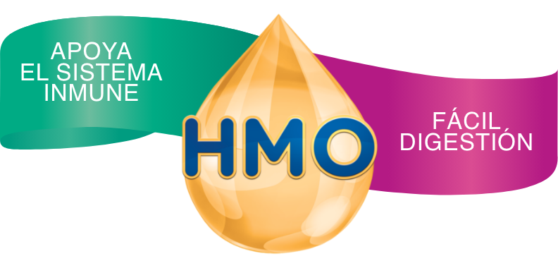

- Prebiótico, alimentan bacterias buenas.
- Engañan y eliminan bacterias malas.
- Modulan respuesta inmune.
Similac® 3 KID HMO. Alimento lácteo en polvo para niños en crecimiento que combina una mezcla de grasas de fácil digestión con el prebiótico HMO 2'-FL, nucleótidos, DHA y luteína. Registro Sanitario: RSA-002860-2017. Recomendado para niños mayores de 2 años. *El HMO (oligosacárido 2’-FL) contenido en las fórmulas de Similac se ha obtenido de manera sintética. Este producto no reemplaza una alimentación adecuada.